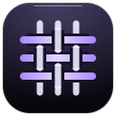
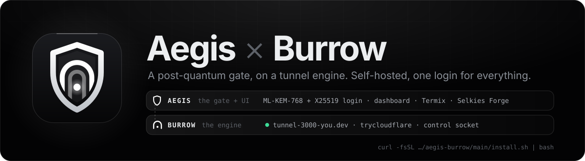

I build self-hosted software that feels finished.
Zero dependencies where I can. Most of it runs on a Raspberry Pi on my desk.
what I've built

Weftthe addon format that ties them together
Two halves, one process.
Aegis is the gate and the dashboard: one sign-in in front of Termix, Selkies Forge, your tunnels and your own links. Burrow is the engine underneath: the tunnels, the Cloudflare link, the addons. Burrow has no login of its own; Aegis decides who gets in.
- The login
- Sealed twice in the browser, with keys from an X-Wing exchange (ML-KEM-768 + X25519). Passwords kept as scrypt, sessions bound to their host.
- Machines
- Link another box with one command. Behind NAT, an agent carries SSH over one outgoing socket. Move the whole gate to another machine in one click.
- Addons
- Bulwark, Burrow Pages, selfmail and Selkies Forge install from the dashboard, in the Weft format.
curl -fsSL https://raw.githubusercontent.com/alexd-aero/aegis-burrow/main/install.sh | bashThe engine
Burrow
Any port on your machine, at its own HTTPS address. No ports opened on your router.
- Your domain, or none. One Cloudflare authorization links your own domain. Without one, every tunnel gets a free
trycloudflare.comaddress. - One wildcard record. Every tunnel at
NAME.tunnel.example.com, with your own certificate held on a small VPS relay where Cloudflare's free one stops a level short. - Ports on an address. Another whole site on
docs.example.com:8080. New in 2.39. - Clone a link. Paste someone's Aegis × Burrow tunnel and put it on an address of yours. Their gate still decides who may open it.
- A control socket. Apps on the same machine publish their own tunnels. Selkies Forge does, for every desktop it starts.
- Extensions. Addons can run inside Burrow and add a page to it. Burrow Pages is built that way.

The part I'm proudest of.
Bulwark runs inside the gateway and answers before your app does: banned, blocklisted, a payload, or through. It decodes a URL the way your app will, names what it found with its MITRE ATT&CK, OWASP and CVE references, scores every address, and sees waves coming before they peak. It's on by default in Aegis × Burrow.
This console runs the real engine
Bulwark's detection code, copied unchanged from its repository, runs in this page. Send it anything. Two dropped payloads from one address ban it, just like on a real gate.
The rest of the family.
They share one addon format, Weft, and plug into each other.
Shipping log.
Every commit to my main projects.